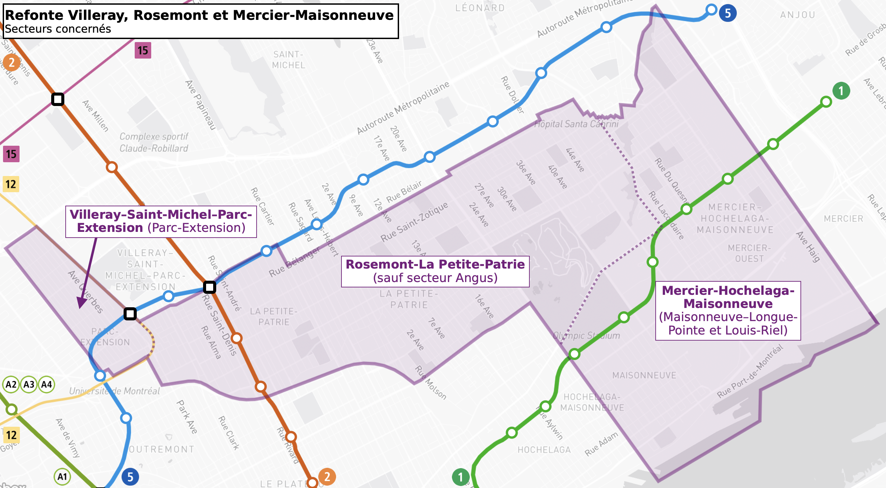
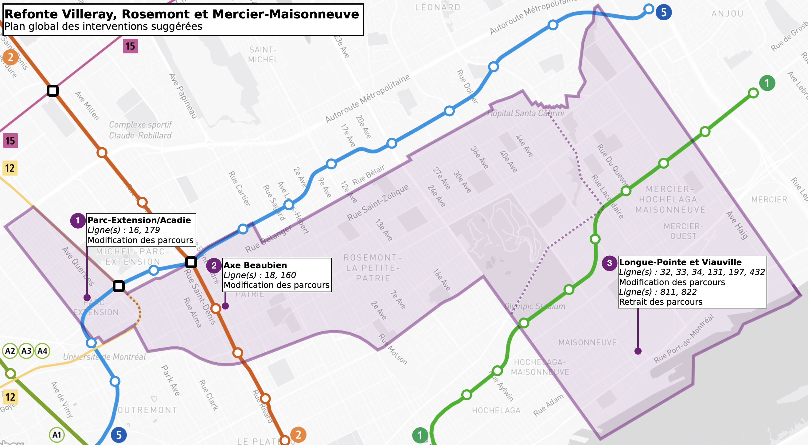

Territoire concernée par la refonte
Portrait du secteur
Résumé des interventions proposées

Les secteurs d'analyse sont approximatifs et ne correspondent pas nécessairement aux districts.

Les sections ci-dessous explique en détail certaines interventions majeures énumérées ci-dessus.
L'accès à la ligne bleue du secteur est majoritairement assuré par la ligne 80 à la station multimodale Parc: la ligne 179 prend un trajet sinueux, surtout en direction nord, à partir de la station Acadie. Quant à la ligne 16, l'accès à la station Parc rallonge le temps de parcours pour accéder à la ligne bleue. Également, Pour les deux lignes, la congestion routière sur Jean-Talon demeure problématique et cause des retards sur l'ensemble des lignes. Il est donc suggéré d'échanger l'offre des deux parcours: la ligne 179 terminera son trajet à la station Parc via Ogilvy, et la ligne 16 à Acadie via Beaumont.
Redondance des lignes 18 et 160 sur Beaubien à l'ouest de la station, surtout la ligne 160 est devenue une ligne fréquente en pointe.

ASDFASDF ASDFASDF Add À l'est de la rue Frontenac, les lignes 24, 25, 29 et 97 sont appelées à être optimisées. D'abord, la ligne 24 ne dessert aucune station de métro. Elle est appelée à donc terminer à la station Frontenac, en concordant avec la ligne 356. Ensuite, considérant l'achalandage de la ligne 97 est plutôt concentré à l'ouest de la rue Frontenac, son trajet est raccourci à la station Préfontaine. Comme la ligne 29 n'est pas bi-directionnelle, desservant une boucle via Davidson et Joliette, cette portion du trajet sera remplacée par un prolongement de la ligne 25. Enfin, la ligne 29 pourra reprendre la desserte sur Rachel et terminer à la station Pie-IX. Le schéma suivant montre les optimisations proposées:

ASDFADSF Le manoeuvre d'accès à la station Frontenac pour les lignes 85, 185, 362 et 364 devra être revu en raison des modifications de la rue du Havre. Il est suggéré de prendre D'Iberville et La Fontaine, similaire à la ligne 356 actuelle.
ASDFASDF Enfin, aux alentours du pont Jacques-Cartier, la desserte des lignes 10, 45 et 445 devra être revue. Des modifications aux configurations de rues rend un service bi-directionnel de plus en plus difficile: la ligne 10 Sud, par exemple, doit effectuer plusieurs long détours pour rejoindre la station Papineau, en passant presque par la station Frontenac. Il est donc plus logique de simplement faire descendre toutes les lignes via Papineau et remonter par De Lorimier.
ASDFADFSAA La ligne 445 a été créée en 2019 et permet un accès direct au centre-ville en pointe. Cependant, la desserte de cette ligne est entièrement locale. De plus, l'achalandage démontre qu'une bonne partie de l'achalandage provient de la station Papineau: les usagers continuent d'emprunter la ligne pour se rabattre au métro. Cette ligne doit se démarquer des lignes 10 et 45 en réduisant le nombre d'arrêts, surtout à l'approche de la station Papineau. De plus, l'offre de service n'est présentement pas bi-directionnelle: cette ligne descend par Papineau et remonte par De Lorimier sur une longue portion du trajet. Le plan suivant montre les optimisations suggérées pour ces trois lignes:

| Ligne | Type d'intervention | Intervention(s) suggérée(s) [modifications majeures de trajet seulement] | Note(s) | |
|---|---|---|---|---|
| 18 • Beaubien |
|
Modification de trajet |
|
|
| 160 • Barclay |
|
Intervention mineure |
|